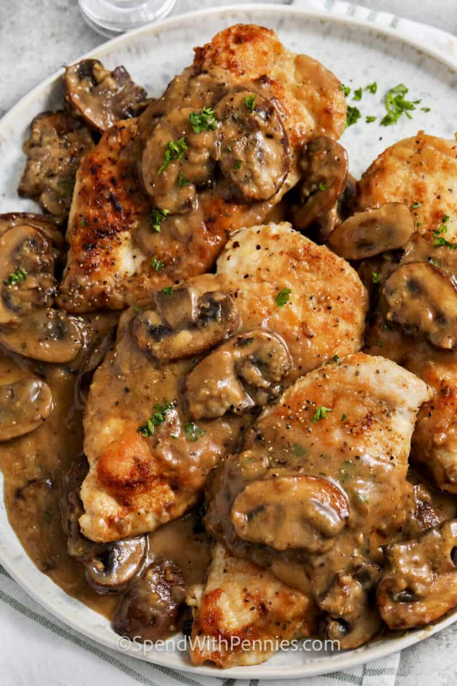

Chicken Marsala
(Other recipes)

A tasty chicken marsala
Seasoned chicken breasts are simmered in a marsala wine mushroom sauce and ready to serve in less than 30 minutes!
Marsala, in Italy, produces the wine used in this recipe. This Chicken Marsala recipe smothers chicken breasts in a delicious mushroom marsala sauce.
Ingredients
- 4 small boneless skinless chicken breasts 5-6 oz each
- 4 small boneless skinless chicken breasts 5-6 oz each
- 4 tablespoons olive oil
- ¾ teaspoon salt
- ½ teaspoon black pepper
- ¾ cup chicken stock or chicken broth
- 2 tablespoons butter
- ¼ teaspoon thyme or 1 teaspoon fresh thyme
- 1 small shallot diced (or onion)
- 8 ounces mushrooms white or brown, sliced
- 1 ½ tablespoons flour
- ½ cup dry Marsala wine
- 2 tablespoons parsley or chives for garnish
Steps
- Cover the chicken breasts with plastic wrap and use the flat side of a meat mallet or a rolling pin to pound to ¼-inch thick. Season with salt and pepper and dredge in flour.
- In a large skillet, preheat the olive oil over medium high heat. Cook the chicken in batches, 3-4 minutes per side or until cooked through. Transfer the chicken to a plate.
- In the same pan, add 2 tablespoons butter, thyme, and shallot and cook over medium heat until tender, about 3 minutes. Add the mushrooms and cook until juices are released, about 5 minutes. Stir in 1 ½ tablespoons flour and cook for 1 minute more.
- Pour in the Marsala wine and stock or broth and simmer until thick and bubbly, about 3 minutes.
- Add chicken back into the pan and simmer for 2-3 minutes or until heated through.
- Garnish and serve over pasta.